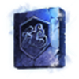

| 強化数 | 装身具：番号 | 1 | 2 | 3 | 4 | 5 | 6 | 7 | 装身具：番号 |
| ：画像 |  | ：画像 | |||||||
| 性能項目 | 闘士の 紋章 | 射手の 紋章 | 賢者の 紋章 | 守護の 紋章 | 闘士の 守護紋章 | 射手の 守護紋章 | 賢者の 守護紋章 | 性能項目 | |
| +0 | AC | -1 | -1 | -1 | -1 | AC | |||
| +0 | STR | +1 | +1 | STR | |||||
| +0 | DEX | 1 | +1 | DEX | |||||
| +0 | INT | +1 | +1 | INT | |||||
| +1 | AC | -1 | -1 | -1 | -1 | AC | |||
| +1 | STR | +1 | +1 | STR | |||||
| +1 | DEX | 1 | +1 | DEX | |||||
| +1 | INT | +1 | +1 | INT | |||||
| +1 | 回復悪化防御(恐怖) | +0 | +0 | +0 | +0 | +0 | +0 | 回復悪化防御(恐怖) | |
| +1 | ポーション回復量 | 2%,+2 | 2%,+2 | 2%,+2 | 2%,+2 | 2%,+2 | 2%,+2 | ポーション回復量 | |
| +1 | EXP | +0 | EXP | ||||||
| +2 | AC | -1 | -1 | -1 | -1 | AC | |||
| +2 | STR | +1 | +1 | STR | |||||
| +2 | DEX | +1 | +1 | DEX | |||||
| +2 | INT | +1 | +1 | INT | |||||
| +2 | 回復悪化防御(恐怖) | +0 | +0 | +0 | +0 | +0 | +0 | 回復悪化防御(恐怖) | |
| +2 | ポーション回復量 | 4%,+4 | 4%,+4 | 4%,+4 | 4%,+4 | 4%,+4 | 4%,+4 | ポーション回復量 | |
| +2 | EXP | +0 | EXP | ||||||
| +3 | AC | -1 | -1 | -1 | -1 | AC | |||
| +3 | STR | +1 | +1 | STR | |||||
| +3 | DEX | 1 | +1 | DEX | |||||
| +3 | INT | +1 | +1 | INT | |||||
| +3 | 回復悪化防御(恐怖) | +0 | +0 | +0 | +0 | +0 | +0 | 回復悪化防御(恐怖) | |
| +3 | ポーション回復量 | 8%,+8 | 8%,+8 | 8%,+8 | 8%,+8 | 8%,+8 | 8%,+8 | ポーション回復量 | |
| +3 | EXP | +0 | EXP | ||||||
| +4 | AC | -1 | -1 | -1 | -1 | AC | |||
| +4 | STR | +1 | +1 | STR | |||||
| +4 | DEX | +1 | +1 | DEX | |||||
| +4 | INT | +1 | +1 | INT | |||||
| +4 | 近距離命中 | +1 | +1 | 近距離命中 | |||||
| +4 | 遠距離命中 | +1 | +1 | 遠距離命中 | |||||
| +4 | 魔法命中 | +1 | +1 | 魔法命中 | |||||
| +4 | MR | +1 | +1 | +1 | +1 | MR | |||
| +4 | 回復悪化防御(恐怖) | +0 | +0 | +0 | +0 | +0 | +0 | 回復悪化防御(恐怖) | |
| +4 | ポーション回復量 | 10%,+10 | 10%,+10 | 10%,+10 | 10%,+10 | 10%,+10 | 10%,+10 | ポーション回復量 | |
| +4 | EXP | +0 | EXP | ||||||
| +5 | AC | -1 | -2 | -2 | -2 | AC | |||
| +5 | STR | +1 | +1 | STR | |||||
| +5 | DEX | +1 | +1 | DEX | |||||
| +5 | INT | +1 | +1 | INT | |||||
| +5 | 近距離ダメージ | +1 | +1 | 近距離ダメージ | |||||
| +5 | 近距離命中 | +1 | +2 | 近距離命中 | |||||
| +5 | 遠距離ダメージ | +1 | +1 | 遠距離ダメージ | |||||
| +5 | 遠距離命中 | +1 | +2 | 遠距離命中 | |||||
| +5 | SP | +1 | +1 | SP | |||||
| +5 | 魔法命中 | +1 | +2 | 魔法命中 | |||||
| +5 | MR | +2 | +4 | +4 | +4 | MR | |||
| +5 | 回復悪化防御(恐怖) | +0 | +0 | +0 | +0 | +0 | +0 | 回復悪化防御(恐怖) | |
| +5 | ポーション回復量 | 12%,+12 | 12%,+12 | 12%,+12 | 12%,+12 | 12%,+12 | 12%,+12 | ポーション回復量 | |
| +5 | 祝福消耗効率 | +0 | +0 | +0 | 祝福消耗効率 | ||||
| +5 | ダメージ減少 | +1 | +1 | +1 | ダメージ減少 | ||||
| +5 | PvP魔法ダメージ減少 | +0 | +0 | +0 | PvP魔法ダメージ減少 | ||||
| +5 | EXP | +0 | EXP | ||||||
| +6 | AC | -1 | -3 | -3 | -3 | AC | |||
| +6 | STR | +1 | +1 | STR | |||||
| +6 | DEX | +1 | +1 | DEX | |||||
| +6 | INT | +1 | +1 | INT | |||||
| +6 | 近距離ダメージ | +2 | +2 | 近距離ダメージ | |||||
| +6 | 近距離命中 | +2 | +3 | 近距離命中 | |||||
| +6 | 遠距離ダメージ | +2 | +2 | 遠距離ダメージ | |||||
| +6 | 遠距離命中 | +2 | +3 | 遠距離命中 | |||||
| +6 | SP | +2 | +2 | SP | |||||
| +6 | 魔法命中 | +2 | +3 | 魔法命中 | |||||
| +6 | MR | +3 | +6 | +6 | +6 | MR | |||
| +6 | 回復悪化防御(恐怖) | +0 | +0 | +0 | +0 | +0 | +0 | 回復悪化防御(恐怖) | |
| +6 | ポーション回復量 | 14%,+14 | 14%,+14 | 14%,+14 | 14%,+14 | 14%,+14 | 14%,+14 | ポーション回復量 | |
| +6 | 祝福消耗効率 | +0 | +0 | +0 | 祝福消耗効率 | ||||
| +6 | ダメージ減少 | +1 | +1 | +1 | ダメージ減少 | ||||
| +6 | PvP魔法ダメージ減少 | +0 | +0 | +0 | PvP魔法ダメージ減少 | ||||
| +6 | 全スキル命中 | +1 | +1 | +1 | 全スキル命中 | ||||
| +6 | EXP | +0 | EXP | ||||||
| +7 | AC | -1 | -4 | -4 | -4 | AC | |||
| +7 | STR | +1 | +1 | STR | |||||
| +7 | DEX | +1 | +1 | DEX | |||||
| +7 | INT | +1 | +1 | INT | |||||
| +7 | 近距離ダメージ | +3 | +4 | 近距離ダメージ | |||||
| +7 | 近距離命中 | +3 | +5 | 近距離命中 | |||||
| +7 | 遠距離ダメージ | +3 | +4 | 遠距離ダメージ | |||||
| +7 | 遠距離命中 | +3 | +5 | 遠距離命中 | |||||
| +7 | SP | +3 | +4 | SP | |||||
| +7 | 魔法命中 | +3 | +5 | 魔法命中 | |||||
| +7 | MR | +4 | +8 | +8 | +8 | MR | |||
| +7 | 回復悪化防御(恐怖) | +0 | +0 | +0 | +0 | +0 | +0 | 回復悪化防御(恐怖) | |
| +7 | ポーション回復量 | 16%,+16 | 16%,+16 | 16%,+16 | 16%,+16 | 16%,+16 | 16%,+16 | ポーション回復量 | |
| +7 | 祝福消耗効率 | +0 | +0 | +0 | 祝福消耗効率 | ||||
| +7 | ダメージ減少 | +3 | +3 | +3 | ダメージ減少 | ||||
| +7 | PvP魔法ダメージ減少 | +0 | +0 | +0 | PvP魔法ダメージ減少 | ||||
| +7 | 全スキル命中 | +2 | +2 | +2 | 全スキル命中 | ||||
| +7 | 状態異常時間増加 | 0.1秒 | 0.1秒 | 0.1秒 | 状態異常時間増加 | ||||
| +7 | EXP | +0 | EXP | ||||||
| +8 | AC | -1 | -6 | -6 | -6 | AC | |||
| +8 | STR | +1 | +1 | STR | |||||
| +8 | DEX | +1 | +1 | DEX | |||||
| +8 | INT | +1 | +1 | INT | |||||
| +8 | 近距離ダメージ | +4 | +6 | 近距離ダメージ | |||||
| +8 | 近距離命中 | +4 | +7 | 近距離命中 | |||||
| +8 | 遠距離ダメージ | +4 | +6 | 遠距離ダメージ | |||||
| +8 | 遠距離命中 | +4 | +7 | 遠距離命中 | |||||
| +8 | SP | +4 | +5 | SP | |||||
| +8 | 魔法命中 | +4 | +7 | 魔法命中 | |||||
| +8 | MR | +5 | +10 | +10 | +10 | MR | |||
| +8 | 回復悪化防御(恐怖) | +0 | +0 | +0 | +0 | +0 | +0 | 回復悪化防御(恐怖) | |
| +8 | ポーション回復量 | 18%,+18 | 18%,+18 | 18%,+18 | 18%,+18 | 18%,+18 | 18%,+18 | ポーション回復量 | |
| +8 | 祝福消耗効率 | +0 | +0 | +0 | 祝福消耗効率 | ||||
| +8 | ダメージ減少 | +5 | +5 | +5 | ダメージ減少 | ||||
| +8 | PvP魔法ダメージ減少 | +0 | +0 | +0 | PvP魔法ダメージ減少 | ||||
| +8 | 全スキル命中 | +3 | +3 | +3 | 全スキル命中 | ||||
| +8 | 状態異常時間増加 | 0.2秒 | 0.2秒 | 0.2秒 | 状態異常時間増加 | ||||
| +8 | EXP | +0 | EXP |